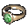

|
2003年6月12日
韓國測試伺服器6月12日檔案內容
1. 加入了以下三個圖示：

2. 傲慢塔第4、5、6、7、8、10、12、13、15、22、26及46層的地圖可能有少許更改。
3. 在物件描述檔中加入了以下名稱：
4. 在物件控制檔中加入了以下物件：
Episode Guild Master
Episode Female Chief
Episode Diviner
Episode PC Male
Episode Man
Episode PC Female
Episode Woman
Episode Mage
Episode House Light
Episode Quest NPC
Scroll of Oman Tower
Amulet of Oman Tower
Ring of Zenis
Bats
當中的"Episode PC"為新職業的角色，暫時已知他們可以使用劍、十字弓、雙劍（兩隻手拿兩把劍，即是二刀流！）、爪、匕首及飛標來攻擊！而有關速度應該是未作最後調整的。
而其他的Episode系物件應該是新角色的種族的相關NPC，相信他會在不久後會在新的大陸上出現。
5. 加入了部分新怪物（如鑽石高崙、吸血鬼、彊屍王、潔尼斯女皇）的聲音檔。
6. 更新了部分新怪物的動畫檔，新加入的怪物有蝙蝠：
|